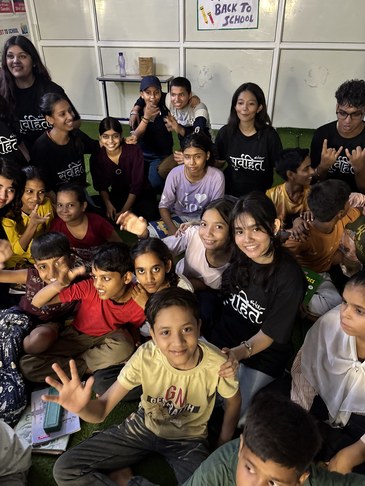
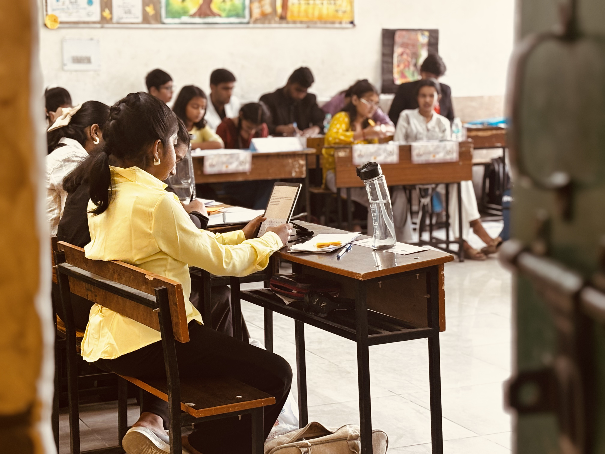

Our Journey of Impact
Every project reflects our commitment towards creating a better, more compassionate society.

Gaushala Drive
Sarvyahith's first-ever on-ground drive was organized at a gaushala, where our team came together to serve and care for the cows. During the drive, we fed 50 cows, spent quality time with them, and experienced the joy of serving them with kindness and compassion. The initiative highlighted the importance of teamwork, empathy, and selfless service, showing us how even small acts of care can create a meaningful impact on the lives of others while strengthening our sense of community and responsibility.

Project Pehchaan Fundraiser Food Stall
A fundraiser food stall was organized at Swami Shraddhanand College, University of Delhi, in support of Project Pehchaan. Our team managed the stall, served food, interacted with visitors, and shared the mission of Project Pehchaan and how it works towards restoring the identity and confidence of acid attack survivors.Every purchase contributed to the fundraiser, helping us raise funds while also spreading awareness and encouraging more people to become a part of the cause.

Underprivileged School Drive
Our team visited an underprivileged school and spent the day with the children through learning sessions, games, and fun activities. We interacted with them, listened to their stories, asked about their dreams and future careers, and shared moments filled with laughter and happiness. More than teaching, the drive helped us build meaningful connections, reminding us that giving our time, attention, and encouragement can make a lasting impact on a child's life.

Project Pahechaan Fundraiser
Project Pehchaan, an initiative by Sarvyahith in collaboration with Angel Public School, successfully organized a Model United Nations (MUN) Conference that hosted 200+ delegates from various schools. The conference provided students with a platform to enhance their diplomacy, public speaking, critical thinking, and leadership skills while contributing to a meaningful social cause. Acid attack survivors were invited as special guests to share their inspiring journeys and interact with the delegates. A special Project Pehchaan dance performance portrayed the struggles and resilience of survivors, spreading awareness and fostering empathy among the audience. Through delegate registrations and contributions, the event successfully raised funds for the acid attack survivor community, collecting 10% more funds than the previous fundraising initiative, making the conference both an impactful educational experience and a successful fundraising milestone.